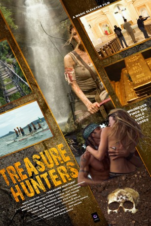

IMDB-Wertung: 4.0 / 10
IMDB-Wertung: 4.0 / 10  Metascore:
Metascore: 
Two teams of treasure hunters go on a illegal dig in Corregidor Island, Philippines to find missing gold buried by the Imperial Japanese during WWII.
 gesehen am 15.11.2017
gesehen am 15.11.2017 IMDB-Wertung: 4.0 / 10 Metascore:
Two teams of treasure hunters go on a illegal dig in Corregidor Island, Philippines to find missing gold buried by the Imperial Japanese during WWII.
Jahr: 2017
Dauer: 88 Minuten
FSK:
Land: USA Studio: Magic ElevatorTonspuren:
Untertitel:
Auflösung: 1080p (1920x1080) Größe: 3983 MB
Regisseur: Filip Maciejewicz
Drehbuch: Filip Maciejewicz
Soundtrack:
Darsteller:
Datei: X:\2017(N-Z)\Treasure Hunters (2017, FSK, 1920x1080).mkv seit 15.11.2017
Festplatte: HD 2017(A-Z)-2018(A-F)
 Es gibt insgesamt 170 Filme in der Gruppe '2017(N-Z)'
Es gibt insgesamt 170 Filme in der Gruppe '2017(N-Z)'